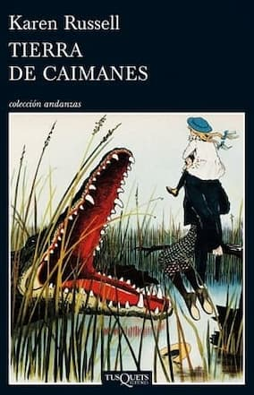

LA SOCIEDAD DE LA LIBELULA
Ana Gonzalez Duque
Editor Independiente
Precio : $30.000
Cuando «La Sociedad de la Libélula», la mayor editorial de fantasía del país, abre sus puertas a nuevos autores,
Isabel decide probar suerte. Siempre había considerado que perderse en un buen libro era una actividad placentera. Hasta que conoce
a Melchor Malatar, el editor jefe de La Sociedad, creador de una maquina que permite a los escritores vivir sus propias historias.
Desdibujar las fronteras entre ficción y realidad no tiene tanto encanto como Isabel había creído, sobre todo cuando se sumerge en
un mundo helado y agonizante, poblado de razas extrañas, en el que su vida corre grave peligro. Un escritor desaparecido,
un homicidio y un amor que desafía todas las normas impuestas se entrelazan en una trama que Isabel deberá recorrer en busca de
un final capaz de salvarla.
Comprar
EL MAR DE MADERA
Jonathan Carroll
Editorial: La Factoria de Ideas
Precio : $39.000
En Crane's View, un pequeño pueblo situado junto a un río, nunca sucede nada fuera de lo ordinario.
Pero desde el momento en que un perro de tres patas entra en la confortable vida del jefe de policía Frannie McCabe, muere a sus pies,
y vuelve a la vida, McCabe se encuentra lanzado a un nuevo mundo de perturbadoras maravillas. Una pluma multicolor, misteriosos dibujos
y un Frannie McCabe de diecisiete años se aparecen para insinuarle la verdad sobre su pasado, su presente y su futuro: él está en
el centro de una conspiración, y lo que haga en los próximos días puede tener consecuencias para el mundo entero.
Comprar

TIERRA DE CAIMANES
Karen Rusell
Editorial: Tusquets
Precio : $35.000
El parque temático que la dinastía de los Bigtree, domadores de caimanes, posee en una de las pantanosas Diez Mil Islas frente
a las costas de Florida sufre un duro revés con la muerte de Hilola Bigtree. Ésta, madre de tres hijos, era la estrella del parque
gracias a sus arriesgados y espectaculares números con los caimanes; para colmo, a unos kilómetros, acaba de inaugurarse un sofisticado
competidor, el parque temático Universo Oscuro. La familia empieza a desmoronarse: el Jefe Bigtree, ahora viudo, parece ausente… y acaba,
efectivamente, ausentándose; Kiwi, el hijo mayor, se pasa a la competencia en un intento por mantener a flote el negocio familiar, y Ossie,
la segunda, empieza a tener extrañas visiones. De modo que Ava, la pequeña, una adolescente de trece años, queda a cargo de noventa y ocho
caimanes en medio del vasto y desolador paisaje de su dolor, pero con una conmovedora energía para afrontar cualquier peligro.
Comprar
EL GRAN IMAGINADOR
Juan Jacinto Muñoz Rengel
Editorial: Plaza y Janes
Precio : $49.000
Atenas, siglo XVI. Nikolaos Popoulos ha nacido dotado con una capacidad de ensoñación más allá de los límites de la naturaleza.
Su verdadera vocación es ser escritor. Pero, como perseguido por una maldición, ve una y otra vez truncados sus planes, mientras es arrastrado
a un épico viaje a los orígenes de la fábula y la ficción. Conocerá a legendarios corsarios y a los asombrosos piratas uscoques; se tropezará
con la Condesa Sangrienta y con el gólem de Praga, inspiradores de los mitos de Drácula y del monstruo de Frankenstein, y trabará amistad
con Miguel de Cervantes, antes de que se convierta en el genio más famoso de las letras universales.
Pero ¿logrará al fin escribir una obra digna de su imaginación ilimitada?
Comprar